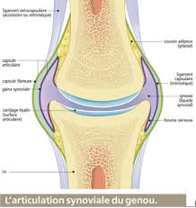
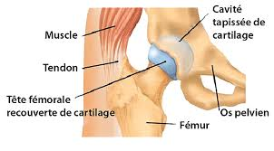

Bienvenue Sur Medical Education
Arthrologie
DefinitionL'arthrologie est l'etude des articulations. L'articulation est l'organe d'union d'une ou plusieurs pieces du squelette, cette union pouvant etre plus ou moins serree selon l'articulation consideree.
Differents types d'articulations
- Les synarthroses : articulations fixes. Ce sont des os qui sont engrenes ensembles (os du crene).
- Les amphiarthroses : articulations semi-mobiles dans lesquelles les deux surfaces osseuses sont unies par les elements fibreux tres courts ne permettant pas que des deplacements reduits.
- Les diarthroses : articulations mobiles. Elles sont constituees par des surfaces articulaires reunies par des moyens d’union (capsules et ligaments) et mobiles l’une par rapport a un organe de glissement, la synoviale.
Description d'une articulation

- Les surfaces articulaires : elles sont situees au niveau des epiphyses des os longs. Le cartilage articulaire recouvre cette surface articulaire ce qui lui donne un aspect lisse, poli et brillant. Son epaisseur est variable et proportionnelle aux pressions qu’elle subit.
- L'organe de glissement : la synoviale. C’est une membrane sereuse d’aspect rose et lisse contenant de nombreux vaisseaux sanguins et filets nerveux. Elle ferme completement l’articulation et on peut parler de cavite articulaire. Elle secrete le liquide synovial ou synovie. Ce liquide joue le rele de lubrifiant de la cavite articulaire.
- Les moyens d’union :
- La capsule articulaire : il s’agit d’un manchon fibreux qui recouvre la synoviale et prend insertion sur l’os a une distance variable de la surface articulaire.
- Les ligaments : ils sont des moyens d’union passive qui stabilisent l’articulation. Ils sont solidaires de la capsule dont ils ne representent que des epaississements (les ligaments croises du genou).
- Les muscles.
- Les bourrelets : ils s’inserent a la peripherie d’une surface articulaire en forme de cavite afin d’en augmenter la profondeur (bourrelet glenoedien de l’omoplate).
- Les menisques : ils s’interposent entre les deux surfaces articulaires pour ameliorer leur congruence (les menisques du genou).

Voir aussi :